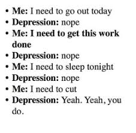
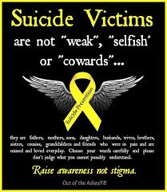
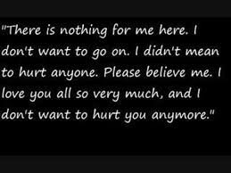
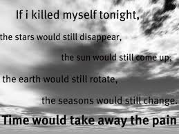

DEPRESSION
Depression is a state of low mood and adversion to activity that can affect a person's thoughts,behavior,feelings and sense of well being.People with a depressed mood may be notably sad,anxious or empty.

SYMPTOMPS OF DEPRESSION
People who are depressed need a lot of attention,care,treatment and counselling.But, how can you do that when you don't even know that the person is depressed? Below are some of the most common symptomps of depression:
- They always have a sad look on their faces as if they have the troubles of the world upon them.
- They are always feeling guilty.
- They are easly irritated or angered.
- They always have an expression of restlessness.
- They lose interests in their favorite sports.
- They hardly eat or overeat
- They find it difficult to concentrate in anything.
- They talk about death as if it is their only way out of their problems.
SOLUTIONS AND TREATMENT
Now that we can identify a depressed person, lets look at how we can cure them of this dreadful disease:
- Visit a counselor or a psychiatrist.
- Antideprssants(but only for serious cases of depression).
- Try as much as possible to make the person feel loved.
- Treat the person in a way that shows that you care about him or her.
- Show the person that there are people who have gone through much worse problems than him or her and yet have been able to overcome their challenges
- Most important of them all, don't treat the person like an outcast. Remember that depression is by no means the persons fault and in order for him or her to overcome it, he or she would need your help.The fate of a person ,whether he or she would die or leave depends on you. Watch how you treat people!
WHY ARE PEOPLE DEPRESSED?
Depression comes in different forms. The reason why aperson may be depressed vary from one person to another. The reasons may sometimes be silly but never laugh at the perrson. Why? Because depression, no matter the cause is very deadly and dangerous.
CAUSES OF DEPRESSION
Below, I have listed some common causes of depression(just because someone's problem isn't here doesn't mean that the person is lying or not in depression):
- Some people get depressed when their loved one dies.
- Some are also depressed when they think that no one loves them.
- Some people are depressed because they are bullied.
- Some also get depressed when they think no one needs them.
- Some also get depressed when they are shunned
- Others get depressed when they think that no one believes in them.
Below are some letters written by suicide victims:

Home